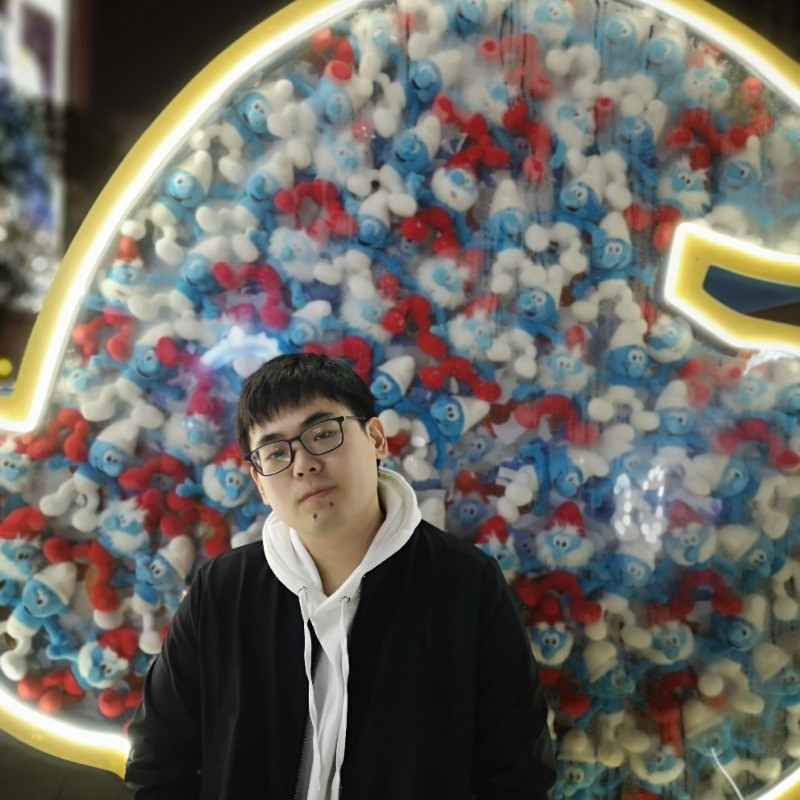

Preprint arXiv · 2026

I am a PhD student at the SMILE Lab at Northeastern University, advised by Prof. Yun Raymond Fu. Before that, I received my B.S. in Mathematics and Applied Mathematics from Shandong University.
From Jun 2025 to Jul 2026 I was a research intern at Snap Inc., where I worked closely with Yanyu Li, Anil Kag, Gordon Qian and Sergey Tulyakov. My research centers on reinforcement learning for generative models, especially video diffusion. I also have experience in model efficiency and multimodal LLM agents. Feel free to reach out for anything! σ`∀´)σ
Worked on differentiable reward fine-tuning and token-level RL for video diffusion models (Diffusion-DRF, TVRL).
Advised by Prof. Yun Raymond Fu. Efficient architectures, multimodal reasoning, and generative-model alignment.
Advised by Prof. Wei Zhang. Universal / source-free domain adaptation and unsupervised person re-identification.